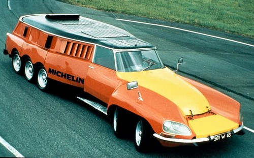

Michelin a développé un projet appelé "Camion Michelin Grande Vitesse" en 1972. Ce projet innovant visait à explorer les possibilités d'améliorer la sécurité et la vitesse des camions.
Objectif :
L'objectif principal de ce projet était d'améliorer la sécurité et la vitesse des camions sur les autoroutes. Michelin cherchait à repousser les limites de la technologie des pneus pour permettre une conduite plus rapide et plus efficace.
Conception aérodynamique :
Le camion grande vitesse de Michelin était équipé d'une conception aérodynamique avancée pour réduire la traînée et améliorer l'efficacité énergétique. Cela comprenait une cabine profilée et d'autres caractéristiques visant à minimiser la résistance de l'air.
Pneus spéciaux :
Le projet a également impliqué le développement de pneus spéciaux conçus pour supporter les vitesses plus élevées tout en maintenant la sécurité. Ces pneus étaient adaptés à la configuration particulière du camion et aux conditions de conduite à grande vitesse.
Vitesse atteinte :
Le camion grande vitesse de Michelin a réussi à atteindre des vitesses considérablement plus élevées que les camions conventionnels de l'époque. Cependant, il est important de noter que ce projet était davantage une démonstration technologique qu'une tentative de produire des camions de grande vitesse pour un usage courant.
Bien que ce concept de camion grande vitesse n'ait pas été intégré dans la production de masse, il a contribué à mettre en lumière les possibilités d'innovation dans le domaine des transports routiers et à sensibiliser aux avantages de la recherche et du développement dans l'industrie automobile.